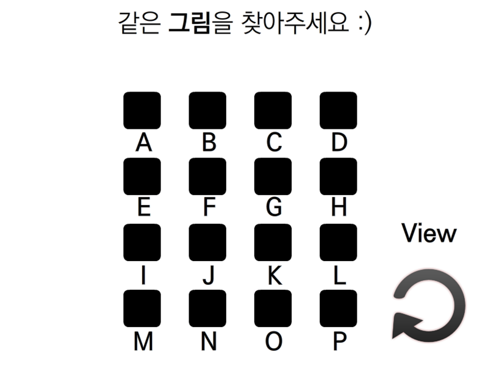
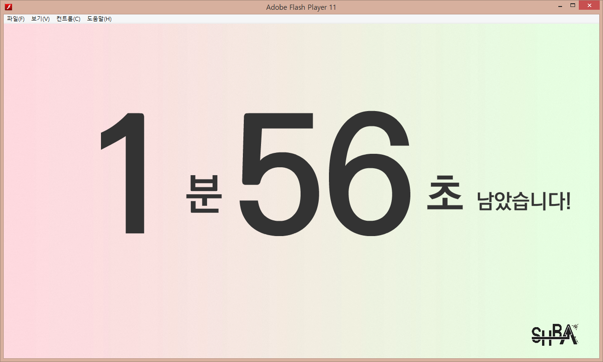
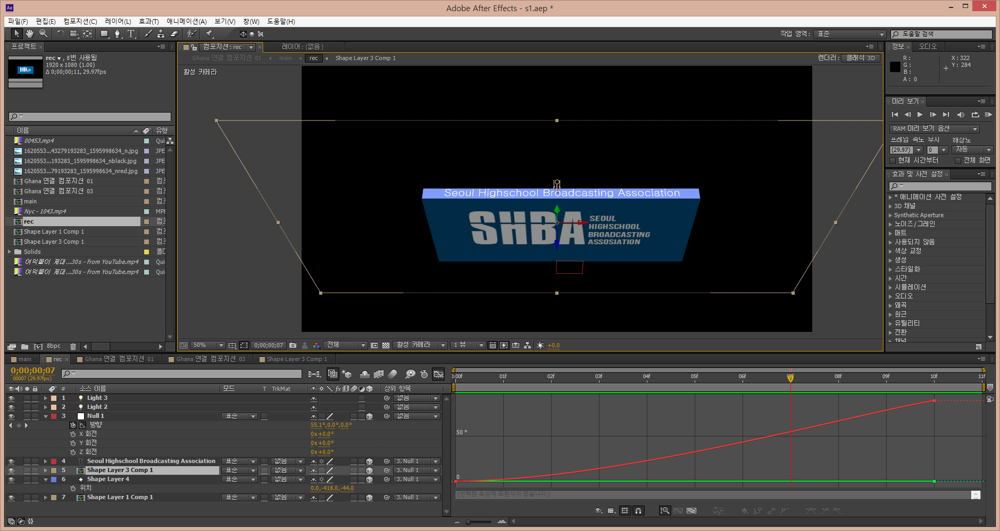
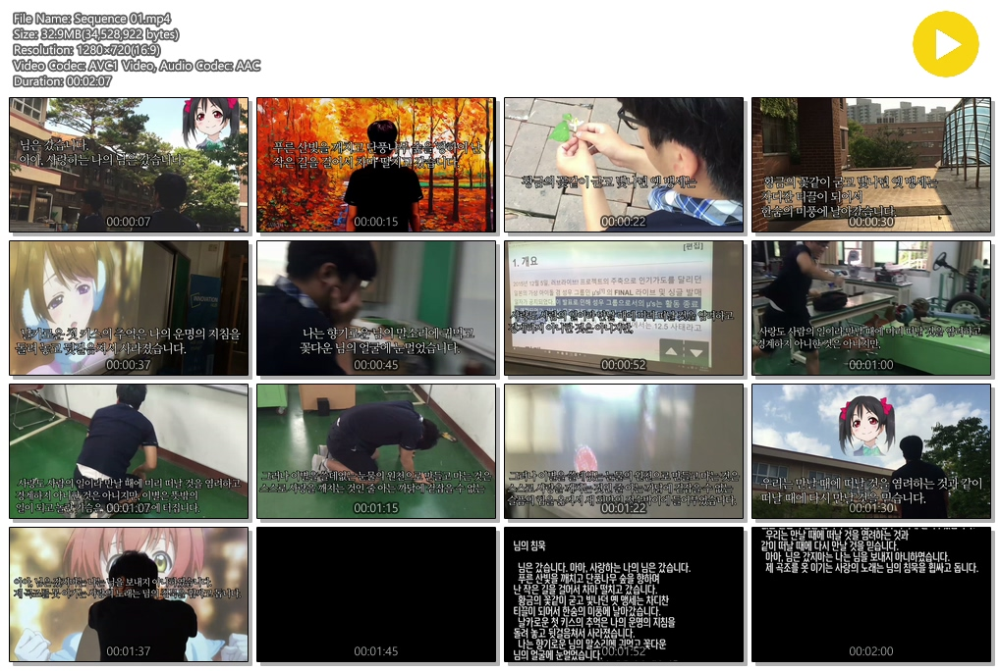
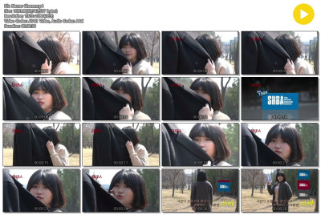
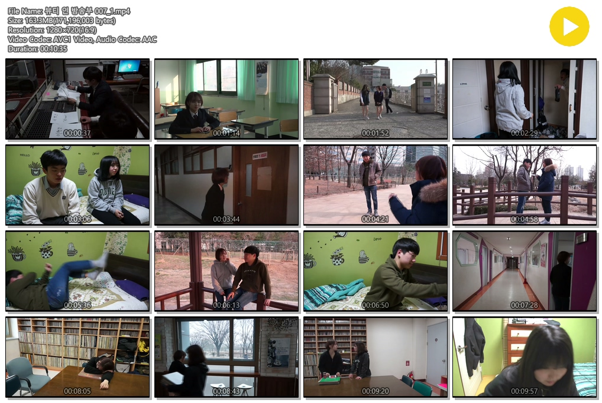
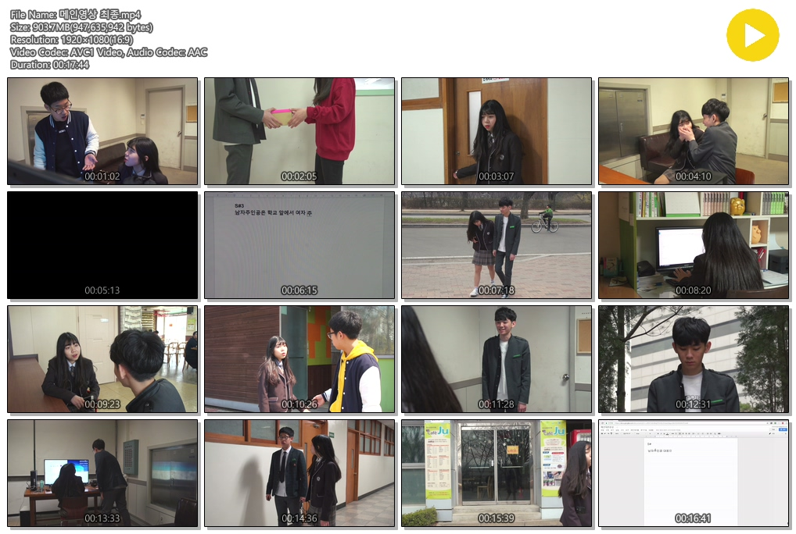
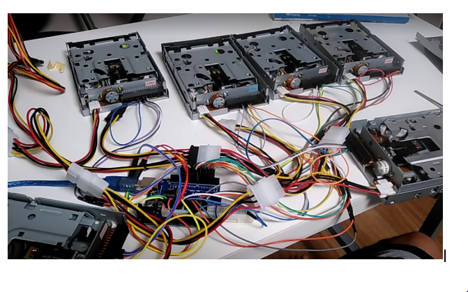
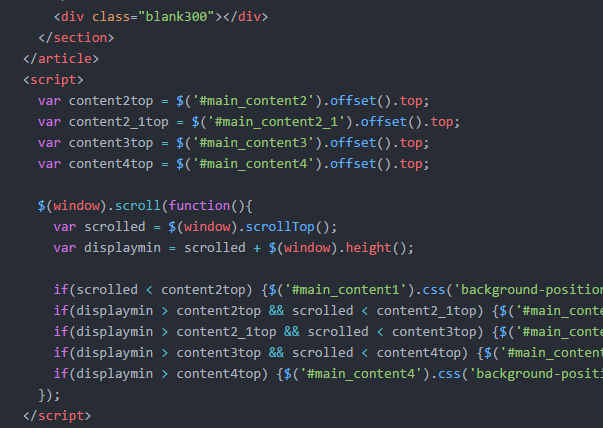

2018년형 유현석
다재다능.
이 지원자는 놀라움으로 가득합니다. 수 년간 다져진 코딩 능력, 다양한 창작물 제작 경험, 인문학적 소양을 바탕으로 한 공학 지식 구비, 이외에도 수많은 장점을 가진, 새로운 시대를 이끌어 갈 학생. 유현석을 만나보세요.
창작 능력
A부터 Z까지, 전천후 창작자.
유현석은 초등학생때부터 컴퓨터를 이용해 다양한 창작물을 만들어왔습니다. 플래시 게임을 즐기며, 그런 게임을 직접 제작하고 싶어졌고, 어린 시절 여러 습작들을 제작하며 창작의 기본 틀을 닦았습니다.
이 캡처된 프로그램은 워크샵에서 사용했던 플래시입니다. 같은 그림을 찾는 고전적 알고리즘의 게임을, 워크샵에서 사용하기 위해 최적화해서 사용했습니다. 이런 프로그램은 오랜 기간 누적된 지식이 있었기에 만들 수 있었습니다.
이는 동 워크샵에서 시간을 재는 용도로 활용한 플래시입니다. 배경에 효과를 주고, 시간/디자인 변경을 쉽게 할 수 있게 하여 오래 사용할 수 있도록 했습니다.
UCC 제작도 꾸준히
중학교에 진학한 이후로는, UCC 제작에 흥미가 생겨 꾸준히 UCC를 만들었습니다. 초기엔 소니 베가스를 사용하였고, 후에 프리미어와 애프터이펙트를 사용하여 더욱 수준 높은 영상을 만들기 시작했습니다
애프터 이펙트로 3D 객체를 다루던 부분을 캡처하였습니다. 위 영상을 포함해 다양한 영상을 만들며, 영상 제작 및 편집 기법에 대해 배웠습니다. 이외에도 영상 작업에 필요했던 다른 작업들(포토샵, BGM 등)도 도전해 보았습니다.
감독 및 편집 등으로 제작에 참여한 UCC입니다.
이외에도 많은 UCC 제작에 참가했습니다.
   
공학 지식
무엇이든 뚝딱.
유현석은 창작에 관한 능력 뿐만 아닌, 깊은 공학적 지식도 가지고 있습니다. 중학생부터 고등학생까지 이어진 방송부 활동에서 엔지니어로서 충실히 일했습니다. 고등학교 3학년인 현재도 몇몇 선생님은 기계 수리를 시키기 위해 저를 부르시고는 합니다.
컴퓨터 공학자의 꿈을 꾸고 있었기에, 초등학교 시절 C부터 시작하여 여러 프로그래밍 언어의 기초를 공부했습니다. 또, 플래시에 사용되는 액션스크립트를 익히며 지금도 유용하게 쓰고 있는 스크립트 계열 언어들의 구조를 익혔습니다.
고등학교에 진학해 들은 기술 수업은 진로 설정에 있어서 전환점이 되었습니다. 교내 기술수업 시간에서 아두이노를 활용한 피지컬 컴퓨팅을 배웠는데, 그 과정에서 상당한 흥미와 재미를 느꼈습니다. 이 사진은 3학년 때 탐구과제로 제작한, MIDI 연주가 가능한 플로피디스크 악기입니다. 더 자세한 정보는 탐구보고서에 나와있습니다.
